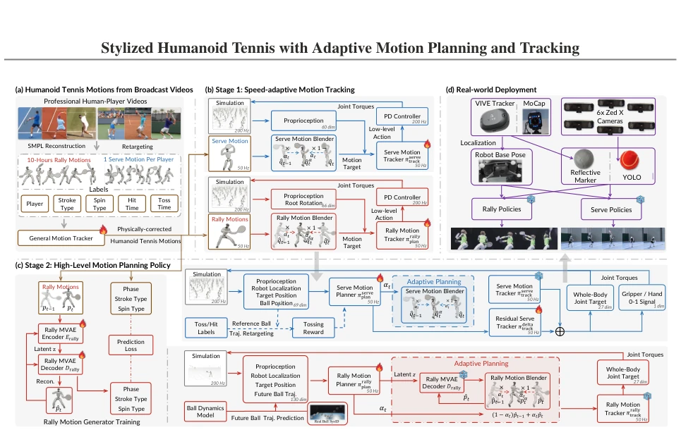
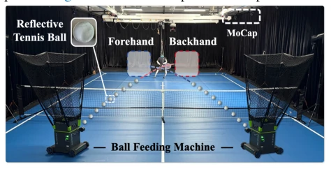

Figure 1: Overview. (Rows 1–3) Our method AdaPT enables the Unitree G1 to learn the forehand and backhand rally styles of three professional players—Rafael Nadal, Roger Federer, and Novak Djokovic—from broadcast videos, and the style of another professional player from motion capture data. (Row 4) The G1 further learns professional serving styles with a parallel gripper for ball tossing. (Row 5) It performs in-the-wild serving using only a ZED X camera and an HTC VIVE Ultimate Tracker, without motion capture. (Rows 6–7) We further extend AdaPT on the full-size Dobot Atom humanoid robot. (Rows 8–10) Finally, the robot demonstrates autonomous interaction with humans, including serving and returning the ball to itself.

Figure 3: AdaPT learns stylized humanoid tennis skills through the pipeline: (a) broadcast videos are reconstructed, retargeted, and physically corrected to obtain tennis motions; (b) speed-adaptive policies learn to track serve and rally motions; (c) high-level planners select or generate style-consistent motions for serve and rally; (d) our robot localization or ball detection modules enable sim-to-real deployment, especially for serving without MoCap.

Figure 5: Experimental setup for rally and serve task with motion capture. Evaluation. For fair rally evaluation in real robot experi- ments, we use an Acemate ball feeding machine [1], and symmetrically place it to launch balls into predefined tar- get regions with reproducible trajectories, repeating 25 times for each region. These launcher configurations are unseen during training, enabling reliable evaluation of fore- hand and backhand generalization. Each trial launches one ball every 4.5s. For serving evaluation, we use the Synria Gloria-D parallel gripper [37] to grasp and toss the tennis ball with 15 trials per model. We also evaluate the Unitree Dex-3 dexterous hand on simpler amateur-level motions; its weight (much heavier than the parallel gripper) prevents G1 from balancing und